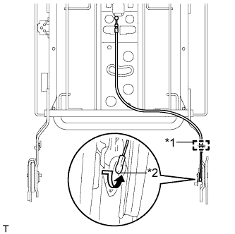

ЗАДНЕЕ СИДЕНЬЕ №2 В СБОРЕ (для сиденья с ручным приводом, с левой стороны) > ПОВТОРНАЯ СБОРКА |
| 1. УСТАНОВИТЕ НОЖКУ ЛЕВОГО СИДЕНЬЯ № 3 В СБОРЕ |
Закрепите 4 фиксатора и установите нижний коврик подушки левого сиденья на ножку сиденья № 3.
| 2. УСТАНОВИТЕ НОЖКУ СИДЕНЬЯ № 2 В СБОРЕ (с правой стороны) |
Закрепите 4 фиксатора и установите нижний коврик подушки правого сиденья на ножку сиденья № 2.
| 3. УСТАНОВИТЕ КАРКАС СПИНКИ ЛЕВОГО СИДЕНЬЯ № 3 В СБОРЕ |
Установите каркас спинки сиденья и закрепите его 4 болтами "TORX" с помощью торцевого ключа "TORX" T45.
| 4. УСТАНОВИТЕ ТРОС ФИКСАЦИИ СИДЕНЬЯ № 2 |
|  |
Скрутите конец троса в направлении, показанном стрелкой, чтобы подсоединить его.
Закрепите зажим и установите трос.
| *1 | Хомут |
| *2 | Наконечник троса |
| 5. УСТАНОВИТЕ ТРОС ФИКСАЦИИ СКЛАДЫВАЮЩЕГОСЯ СИДЕНЬЯ В СБОРЕ |
Скрутите конец троса в направлении, показанном стрелкой, чтобы подсоединить его.
| *1 | Зажим A |
| *2 | Зажим B |
| *3 | Бандаж жгута |
| *4 | Наконечник троса |
Закрепите 2 зажима, обозначенных буквой A, чтобы установить трос.
Установите зажим, обозначенный буквой B, вместе с тросом фиксации сиденья № 2.
Установите 2 новых бандажа жгута.
| 6. УСТАНОВИТЕ НАРУЖНУЮ ОТКИДНУЮ КРЫШКУ ЛЕВОГО ЗАДНЕГО СИДЕНЬЯ № 2 |
Введите в зацепление 2 захвата и направляющую, чтобы установить крышку.
Заверните винт.
| 7. УСТАНОВИТЕ ВНУТРЕННЮЮ ОТКИДНУЮ КРЫШКУ ЛЕВОГО ЗАДНЕГО СИДЕНЬЯ № 2 |
Введите в зацепление 5 захватов, чтобы установить крышку.
| 8. УСТАНОВИТЕ НАРУЖНУЮ ОТКИДНУЮ КРЫШКУ ЛЕВОГО ЗАДНЕГО СИДЕНЬЯ № 3 |
Введите в зацепление 2 захвата и направляющую, чтобы установить крышку.
Заверните винт.
| 9. УСТАНОВИТЕ ВНУТРЕННЮЮ ОТКИДНУЮ КРЫШКУ ЛЕВОГО ЗАДНЕГО СИДЕНЬЯ № 3 |
Введите в зацепление 4 захвата, чтобы установить крышку.
| 10. УСТАНОВИТЕ ОБИВКУ СПИНКИ СИДЕНЬЯ № 2 |
Введите в зацепление 2 захвата, чтобы установить крышку.
| 11. УСТАНОВИТЕ КРАЕВОЕ УКРЕПЛЕНИЕ СПИНКИ ЗАДНЕГО СИДЕНЬЯ № 2 |
Закрепите краевое укрепление на подушке спинки сиденья новыми закрепками.
| 12. УСТАНОВИТЕ ОБИВКУ СПИНКИ ЛЕВОГО ЗАДНЕГО СИДЕНЬЯ № 3 В СБОРЕ |
Установите обивку на подушку спинки сиденья и закрепите ее новыми витковыми пружинами, используя щипцы для витковых пружин.
| *1 | Щипцы для витковых пружин |
| 13. УСТАНОВИТЕ ОБИВКУ СПИНКИ СИДЕНЬЯ ВМЕСТЕ С ПОДУШКОЙ |
Присоедините крепления, чтобы установить обивку спинки сиденья с подушкой.
| 14. УСТАНОВИТЕ ДЕРЖАТЕЛЬ ПОДГОЛОВНИКА ЗАДНЕГО СИДЕНЬЯ № 2 В СБОРЕ |
Введите в зацепление 4 захвата, чтобы установить 2 держателя подголовника.
| 15. УСТАНОВИТЕ ПАНЕЛЬ СПИНКИ ЛЕВОГО ЗАДНЕГО СИДЕНЬЯ В СБОРЕ |
Введите в зацепление 7 фиксаторов, чтобы установить панель.
| 16. УСТАНОВИТЕ РЫЧАГ РАЗБЛОКИРОВКИ ЗАДНЕГО СИДЕНЬЯ В СБОРЕ |
Скрутите концы 2 тросов в направлении, показанном стрелкой, чтобы подсоединить их.
| *1 | Наконечник троса |
| *2 | Трос фиксации сиденья № 2 |
| *3 | Трос фиксации складывающегося сиденья |
| *2 | Хомут |
Установите 2 зажима.
Введите в зацепление крюк.
Установите рычаг и закрепите его 2 винтами.
| 17. УСТАНОВИТЕ КРЫШКУ ЗАЩЕЛКИ ЗАМКА СПИНКИ ЗАДНЕГО СИДЕНЬЯ № 2 |
Введите в зацепление направляющую и захват, чтобы установить крышку.
| *1 | Направляющая |
| 18. УСТАНОВИТЕ КАНАТНЫЙ КРЮК В СБОРЕ |
Установите канатный крюк и закрепите его болтом.
Введите в зацепление 2 захвата, чтобы закрыть крышку.
| 19. УСТАНОВИТЕ РЫЧАГ ЗАМКА ЛЕВОГО ЗАДНЕГО СИДЕНЬЯ В СБОРЕ |
Скрутите конец троса в направлении, показанном стрелкой, чтобы подсоединить его.
| *1 | Хомут |
| *2 | Наконечник троса |
| *3 | Направляющая |
Закрепите зажим.
Введите в зацепление направляющую, чтобы установить рычаг.
Заверните 2 винта.
| 20. УСТАНОВИТЕ КРЫШКУ ЗАЩЕЛКИ ЗАМКА СПИНКИ ЗАДНЕГО СИДЕНЬЯ № 1 |
Введите в зацепление направляющую и захват, чтобы установить крышку.
| *1 | Направляющая |
| 21. УСТАНОВИТЕ ТРОС ФИКСАЦИИ ЛЕВОГО ЗАДНЕГО СИДЕНЬЯ |
Скрутите конец троса в направлении, показанном стрелкой, чтобы подсоединить его.
| *1 | Хомут |
| *2 | Наконечник троса |
Закрепите зажим и установите трос.
| 22. УСТАНОВИТЕ ВНУТРЕННЮЮ НАКЛАДКУ ПЕТЛИ ПОДУШКИ ПРАВОГО ЗАДНЕГО СИДЕНЬЯ |
Введите в зацепление направляющую, чтобы установить накладку.
Установите фиксатор и вверните винт.
| 23. УСТАНОВИТЕ ВНУТРЕННЮЮ НАКЛАДКУ ПЕТЛИ ПОДУШКИ ЛЕВОГО ЗАДНЕГО СИДЕНЬЯ |
Введите в зацепление направляющую, чтобы установить накладку.
Установите фиксатор и вверните винт.
| 24. УСТАНОВИТЕ НАКЛАДКУ НОЖЕК ЛЕВОГО ЗАДНЕГО СИДЕНЬЯ № 3 |
Введите в зацепление 2 захвата, чтобы установить крышку.
| 25. УСТАНОВИТЕ НАКЛАДКУ НОЖКИ ЛЕВОГО ЗАДНЕГО СИДЕНЬЯ |
Закрепите 5 фиксаторов и 3 крепления, чтобы установить накладку.
Установите зажим.
| 26. УСТАНОВИТЕ РЫЧАГ ЗАМКА ЛЕВОГО ЗАДНЕГО СИДЕНЬЯ № 2 В СБОРЕ |
Введите в зацепление 2 направляющие.
Установите рычаг и закрепите его винтом.
Скрутите конец троса в направлении, показанном стрелкой, чтобы подсоединить его.
| *1 | Наконечник троса |
| *2 | Хомут |
Закрепите зажим.
| 27. УСТАНОВИТЕ ЛЕВУЮ ТЯГУ СИДЕНЬЯ № 3 В СБОРЕ |
Закрепите 4 направляющих и 2 захвата, чтобы установить тягу.
Установите 3 фиксатора.
| 28. УСТАНОВИТЕ КАРКАС ПОДУШКИ ЛЕВОГО СИДЕНЬЯ № 2 В СБОРЕ |
Установите каркас подушки сиденья и закрепите его 4 болтами "TORX" с помощью торцевого ключа "TORX" T40.
Вытяните каркас подушки сиденья.
| 29. УСТАНОВИТЕ МОЛДИНГ ПОДУШКИ ЗАДНЕГО СИДЕНЬЯ № 2 |
Введите в зацепление 2 захвата, чтобы установить молдинг.
Заверните 2 винта.
| 30. УСТАНОВИТЕ ВНУТРЕННЕЕ КРАЕВОЕ УКРЕПЛЕНИЕ ПОДУШКИ ЛЕВОГО ЗАДНЕГО СИДЕНЬЯ |
Закрепите краевое укрепление на подушке сиденья новыми закрепками.
| 31. УСТАНОВИТЕ ОБИВКУ ПОДУШКИ ЛЕВОГО СИДЕНЬЯ № 3 В СБОРЕ |
 |
Установите обивку подушки сиденья на подушку сиденья и закрепите ее новыми витковыми пружинами, используя щипцы для витковых пружин.
| *1 | Фиксатор |
| *2 | Щипцы для витковых пружин |
| 32. УСТАНОВИТЕ ОБИВКУ ПОДУШКИ СИДЕНЬЯ ВМЕСТЕ С ПОДУШКОЙ |
Подсоедините 2 крепления, чтобы установить обивку подушки сиденья вместе с подушкой.
Закройте нижнюю часть обивку подушки сиденья и закрепите ее 2 фиксаторами.
Застегните 2 застежки.
| 33. УСТАНОВИТЕ МОЛДИНГ ПОДУШКИ ЗАДНЕГО СИДЕНЬЯ № 1 |
Введите в зацепление 4 направляющих и 2 захвата, чтобы установить молдинг.
Установите 2 фиксатора.
| 34. УСТАНОВИТЕ ЗАМОК РЕМНЯ БЕЗОПАСНОСТИ ЛЕВОГО ЗАДНЕГО СИДЕНЬЯ № 2 В СБОРЕ |
Установите замок ремня безопасности в сборе и закрепите его болтом с помощью торцевого ключа "TORX" T45.
| 35. УСТАНОВИТЕ НИЖНЮЮ НАКЛАДКУ ПЕТЛИ ПОДУШКИ ПРАВОГО ЗАДНЕГО СИДЕНЬЯ |
Присоедините направляющую и 2 захвата, чтобы закрепить щиток.
Заверните 2 винта.
| 36. УСТАНОВИТЕ НИЖНЮЮ НАКЛАДКУ ПЕТЛИ ПОДУШКИ ЛЕВОГО ЗАДНЕГО СИДЕНЬЯ |
Введите в зацепление 3 захвата, чтобы установить крышку.
Заверните 2 винта.
| 37. УСТАНОВИТЕ КОЛПАЧОК |
Установите 2 крышки.
| 38. УСТАНОВИТЕ ПОДГОЛОВНИК ЗАДНЕГО СИДЕНЬЯ В СБОРЕ |
Установите подголовник.